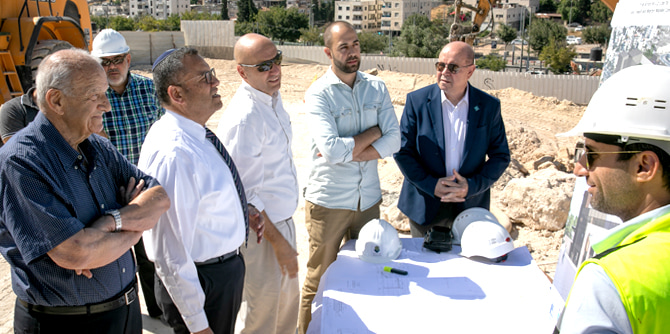
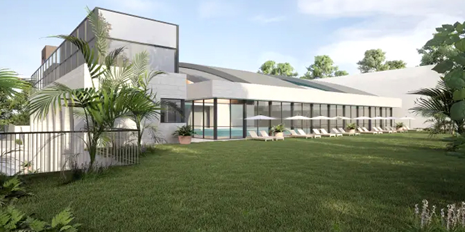

הדמיה: גלפז אדריכלות והנדסה
הדמיה: גלפז אדריכלות והנדסה
ביוזמת הקרן לירושלים ועיריית ירושלים, ובתמיכתה הנדיבה של קרן ג'ק, ג'וזף ומורטון מנדל, החלו העבודות להקמת מרכז ספורט קהילתי בשכונת בית חנינא שבצפון ירושלים. המרכז יכלול ברכת שחייה מקורה, ברכת פעוטות וברכה לימודית, ועל-פי החלטת ועדת ההנצחה בעיריית ירושלים ייקרא ע"ש ג'ק, ג'וזף ומורטון מנדל.
"מדובר בבשורה גדולה לעיר ירושלים ולתושבי מזרח ירושלים בפרט", אמר ראש עיריית ירושלים משה ליאון. "לאחר שנים של הזנחה אנו מקדמים פיתוח מואץ במזרח ירושלים של תשתיות, מבני ציבור, מערכת חינוך וכעת – גם בתחום הקהילה, הספורט והפנאי. זו חובתנו לדאוג לרמת שירותים שווה לכלל תושבי העיר. המרכז החדש מהווה פריצת דרך משמעותית בחיזוק החברה בירושלים, וזו רק ההתחלה של השוואת הפערים בין כל חלקי העיר".
"הקמת מרכז הספורט והברכה בבית חנינא מגשימה את חזון הקרן לירושלים להעצמה קהילתית וליצירת מנהיגות עתידית. אנו מסייעים בצמצום פערים ומתן הזדמנויות שוות לכולם כחלק מהשאיפה לחיים משותפים בעיר", אמר
שי דורון,
נשיא הקרן לירושלים.
צילום: מיכל פתאל, באדיבות הקרן לירושלים
מרכז הספורט החדש ישתרע על פני כ-5000 מ"ר וייבנה בסטנדרטים גבוהים במיוחד. הוא עתיד להכיל, נוסף על ברכות השחייה, גם חדרי כושר, חדרי סטודיו ושטחים ציבוריים. המרכז ייצור הזדמנויות תעסוקה לעשרות עובדים – אנשי מנהל, מאמנים, מדריכים, מנחים וטכנאי מערכות, ואף ישמש כר פורה להצמחת מנהיגות אזרחית מקומית.
"קרן מנדל גאה בשותפות המתמשכת שלה עם העיר ירושלים למען כל תושבי העיר", אמר פרופ' יהודה ריינהרץ, נשיא קרן ג'ק, ג'וזף ומורטון מנדל. "אנו שמחים להצטרף ליוזמתו של ראש העירייה והקרן לירושלים בהקמת מרכז הספורט הקהילתי על שם ג'ק, ג'וזף ומורטון מנדל במזרח ירושלים. קרן מנדל קבעה את מקום מושבה הקבוע בירושלים הבירה, דבר שמבטא את מחויבותה רבת השנים לפעילות למען ירושלים, כמו גם לפעילות לכלל תושבי ישראל", אמר.
את מרכז הספורט החדש ינהלו אנשי המנהל הקהילתי תושבי בית חנינא, שאף היו שותפים מלאים בתכנונו. בשכונת בית חנינא צופים ביקוש עצום למרכז הספורט, בהיותו יחיד מסוגו במזרח העיר, ומצפים שימשוך אליו תושבים משכונות רבות בעיר. העבודות להקמת המרכז החלו בימים האחרונים ועתידות להימשך כשנתיים וחצי. עלות הקמת המרכז החדש נאמדת בכ-20 מיליון דולר.

הדמיה: גלפז אדריכלות והנדסה
{kind=link}
{kind=link}